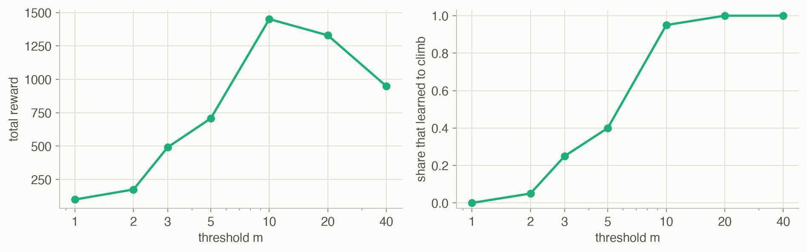

16 · Model-Based Methods
Part III — Model Uncertainty
Big picture
Where this chapter fits
Chapter 15 handled a world with a single state: each action paid off with an unknown probability. Now the actions also move the agent between states, and we don’t know how. Model-based reinforcement learning is the most direct answer: learn the model (the transition and reward functions) from experience, and plan on it with the methods of Chapter 7. This raises three questions. How do we estimate the model? How do we keep the plan up to date as the model changes after every step, without re-solving from scratch? And how do we explore, when the states worth exploring may be far away? Chapter 17 takes the other road: learning values directly, without a model.
The question: how can an agent that doesn’t know the dynamics learn a model, plan with it, and explore well enough to find what’s worth finding?
The short answer: count what happens, and plan on the counts. The maximum likelihood model uses the observed frequencies as probabilities. Planning can be redone in full after each step, or cheaply for a few states, best chosen by prioritized sweeping. Planning on the estimate alone doesn’t explore, so add exploration: randomly (ε-greedy), by optimism about what hasn’t been tried enough (R-MAX), or Bayesian: keep a posterior over models and act on a sample from it (posterior sampling). In principle, a Bayesian agent could plan over beliefs about the model (a Bayes-adaptive MDP), but that is rarely tractable.
The key ideas at a glance
Learn the model by counting. Record how often each action from each state led to each next state, and the rewards received. The maximum likelihood estimate of the transition probability is the observed fraction, and the reward estimate is the average reward. With enough data the estimate converges to the truth, but pairs never tried remain unknown.
Replanning as the model changes. Every step changes the model a little. Solving the whole MDP again (full update) is exact but costly. A randomized update backs up the state just visited and a few random ones. Prioritized sweeping backs up the states whose values are most likely to have changed: the predecessors of states whose values just moved.
Planning on the estimate doesn’t explore. An agent that trusts its estimate never tries what it believes is worse, so it can stay stuck on a small, nearby reward. It needs an exploration strategy, as in Chapter 15, but now exploration may mean traveling to a poorly known part of the world.
Optimism: R-MAX. Pretend every state-action pair tried fewer than \(m\) times pays the maximum possible reward forever. The greedy policy then heads straight for whatever is still unknown, near or far, until it is known. The threshold \(m\) trades the risk of trusting too few samples against the time spent exploring.
Bayesian models and posterior sampling. Keep a Dirichlet posterior over each state-action pair’s next-state distribution: counts plus prior pseudocounts. Posterior sampling draws one plausible MDP from the posterior, solves it, and acts on it. Plausibly good but unexplored options sometimes look good in the sample, so they get tried.
The Bayes-optimal answer. The ideal Bayesian agent plans over (state, belief) pairs, a Bayes-adaptive MDP. It trades exploration against exploitation optimally, as the bandit dynamic program of Chapter 15 did, but its belief space is continuous and huge, so it is solved only approximately.
Vocabulary
| Term | Plain meaning |
|---|---|
| Model-based reinforcement learning | Learn the transition and reward functions, then plan on them |
| \(N(s, a, s')\), \(N(s, a)\) | How often \(a\) in \(s\) led to \(s'\), and how often \(a\) was tried in \(s\) |
| \(\rho(s, a)\) | Sum of the rewards received for \(a\) in \(s\) |
| Maximum likelihood model | Probabilities and rewards estimated as observed frequencies and averages |
| Bellman backup | Recomputing one state’s value from its successors’ values |
| Full, randomized, prioritized updates | Re-solve everything; back up a few random states; back up the most affected states |
| R-MAX | Treat under-tried pairs as maximally rewarding, to drive exploration |
| Dirichlet distribution | A distribution over probability vectors; the belief about a next-state distribution |
| Posterior sampling | Act optimally in a model drawn from the posterior |
| Bayes-adaptive MDP | An MDP whose states include the belief about the model |
After this chapter you can
- Estimate transition and reward functions from experience, by maximum likelihood or with a Dirichlet posterior.
- Keep a value function up to date with full, randomized, or prioritized updates, and judge their cost.
- Explain why exploiting a learned model can fail, and fix it with ε-greedy, R-MAX, or posterior sampling.
- Tune R-MAX’s threshold, and explain the trade-off it controls.
- Describe the Bayes-adaptive MDP and why posterior sampling is a practical substitute.
Intuition
TipAnalogy
You’ve moved to a city with an unreliable bus network, and you don’t have a map.
- Counting: you keep a notebook. “Took the 12 from the station: 7 times it went downtown, 3 times it went to the harbor.”
- Planning: with the notebook, you can work out a good route to anywhere you’ve been. Each new trip changes the notebook, and it’s silly to redo every route every day; update the routes the new entry affects.
- Exploring: if you only ride buses you already know, you never find the fast line across town. You could ride a random bus now and then, assume every unridden route is wonderful until proven otherwise, or imagine one plausible map consistent with your notebook and follow it.
Our running example for exploration is a mountain trail with six positions, 0 (the trailhead) to 5 (the summit). At the trailhead the hiker can rest, earning a small 0.05 per step (a snack from the car). Climbing moves up one position only 35% of the time; 60% of the time the hiker stays put, and 5% of the time slips back. Enjoying the view at the summit earns 1 per step. Walking back down is reliable. With discount 0.95, the best policy is to climb everywhere: worth 8.13 from the trailhead, against 1.00 for resting forever. In the long run it earns 0.857 per step. The agent doesn’t know any of this.
Counting builds the model
Try “climb” at position 2 twenty times; if you moved up 7 times, the estimate of \(T(3 \mid 2, \text{climb})\) is 7/20. On Hex World, from uniformly random actions, the estimated transition probabilities of the tried pairs are off by a total of 0.65 per pair after 100 steps and 0.21 after 3,000 (Figure 4). See Equation 1.
Replan where it matters
Solving Hex World’s estimated model after every step took 74 Bellman backups per step. Backing up just the state visited and 5 others cost 6 per step. After 100 steps, the random picks left an average value error of 0.05 (against the model’s exact solution). Prioritized sweeping, choosing those backups by where values just changed, left 0.008 (Figure 5). See Equation 2.
Exploiting a guess gets stuck
At first the agent knows nothing. It rests once, earns 0.05, and now resting has a known positive value while climbing looks worthless: it has never paid. An agent that follows its estimate, with 10% random actions, rarely strings together the dozens of lucky climbs needed to see the summit. Only 5% of 20 such runs learned to climb within 2,000 steps.
Be optimistic about the unknown
R-MAX treats every action tried fewer than \(m\) times as if it paid the maximum reward, 1, forever. From the trailhead, “climb” looks wonderful until it has been tried \(m\) times; then position 1’s actions look wonderful, and so on up the trail. With \(m = 10\), 95% of runs learned to climb. With \(m = 3\), only 25%: three tries of an action that succeeds 35% of the time often show no progress, and the agent concludes that climbing is hopeless (Figure 7). See Equation 3.
Sample a plausible world
A Bayesian agent keeps, for every position and action, a Dirichlet belief about where it will end up. Posterior sampling draws one plausible trail from those beliefs, plans on it, and acts. An untried climb might, in the sample, lead straight up, so it gets tried. As evidence accumulates, the samples agree with reality. 100% of runs learned to climb, with no exploration parameter to tune (Figure 6). See Equation 4.
The ideal is too expensive
The perfectly Bayesian agent would plan over what it might learn: its state includes its belief. That is a Bayes-adaptive MDP, the multi-state version of Chapter 15’s dynamic program over bandit counts. Its belief space is continuous, so exact solutions are out of reach even for this six-position trail. See Equation 5.
Formalism
Maximum likelihood models
Count the transitions \(N(s, a, s')\) and the reward sums \(\rho(s, a)\) (ADM §16.1). With \(N(s, a) = \sum_{s'} N(s, a, s')\):
\[ \hat T(s' \mid s, a) = \frac{N(s, a, s')}{N(s, a)}, \qquad \hat R(s, a) = \frac{\rho(s, a)}{N(s, a)} \tag{1}\]
In words. The estimated probability of a transition is how often it happened; the estimated reward is the average reward received.
Term by term.
- \(N(s, a)\) counts how often \(a\) was taken in \(s\).
- If \(N(s, a) = 0\) there is no data. Here the estimate is \(\hat T = 0\) and \(\hat R = 0\): the pair looks like a dead end with no reward. A uniform distribution is another common default.
- Prior knowledge can be added by starting the counts at nonzero values.
Why it holds. For the next state, the observations are draws from a categorical distribution. The likelihood \(\prod_{s'} T(s')^{N(s, a, s')}\) is maximized, subject to \(\sum_{s'} T(s') = 1\), at the observed fractions (a Lagrange multiplier argument). The sample mean is the maximum likelihood estimate of a mean reward.
Planning on \((\hat T, \hat R)\) as if it were the truth is called certainty equivalence.
Keeping the plan up to date
After each step the model changes, and the value function \(U\) should follow (ADM §16.2). All three schemes use the Bellman backup on the estimated model, \(U(s) \leftarrow \max_a \big(\hat R(s, a) + \gamma \sum_{s'} \hat T(s' \mid s, a) U(s')\big)\):
- Full update: solve the estimated MDP, for example by value iteration from the current \(U\).
- Randomized update: back up the state just left and \(m\) states chosen at random. This is related to R. S. Sutton’s Dyna (1991).
- Prioritized sweeping (A. W. Moore and C. G. Atkeson, Machine Learning, 1993): keep a priority queue of states. Back up the state just left, then repeatedly back up the highest-priority state. When a backup changes \(U(s)\), raise the priority of every predecessor \(s^-\):
\[ \text{priority}(s^-) \leftarrow \max\Big(\text{priority}(s^-),\ \max_{a^-} \hat T(s \mid s^-, a^-)\, \big|U(s) - u\big|\Big) \tag{2}\]
In words. When a state’s value changes, the states that lead to it probably need updating too, and more urgently if they lead to it often and the change was large.
Term by term.
- \(u\) is the value of \(U(s)\) before the backup.
- \(\hat T(s \mid s^-, a^-)\) is how likely the predecessor’s action is to reach \(s\).
- The product bounds how much \(s^-\)’s backup could change through \(s\): a change of \(|U(s) - u|\) in one successor moves a lookahead by at most \(\gamma \hat T(s \mid s^-, a^-)|U(s) - u|\).
- The queue persists from step to step, so work that couldn’t be done in one step’s budget of \(m\) backups is done later.
Why it holds. Backups where nothing changed do nothing. Changes propagate backward from where the new information arrived, so ordering backups by the size of the incoming change propagates new information fastest per backup.
Exploration with a learned model
Any Chapter 15 strategy works state by state. For example, ε-greedy takes a random action with probability \(\varepsilon\), and otherwise \(\arg\max_a \hat Q(s, a)\). But random actions explore only nearby. R-MAX (R. I. Brafman and M. Tennenholtz, JMLR, 2002) modifies the model instead (ADM §16.3):
\[ R(s, a) = \begin{cases} r_{\max} & N(s, a) < m \\ \rho(s, a)/N(s, a) & \text{otherwise} \end{cases} \qquad T(s' \mid s, a) = \begin{cases} \mathbb{1}[s' = s] & N(s, a) < m \\ N(s, a, s')/N(s, a) & \text{otherwise} \end{cases} \tag{3}\]
In words. A pair not yet tried \(m\) times is modeled as a paradise: it pays the most any action can pay and keeps you there forever. Act greedily on this model.
Term by term.
- \(r_{\max}\) is the largest possible reward (1 on the trail). An under-tried pair is then worth \(r_{\max}/(1 - \gamma)\), as much as anything can be worth: 20 on the trail.
- The self-loop makes that value independent of the unknown dynamics.
- Once a pair has \(m\) samples, the maximum likelihood estimate replaces the fantasy.
- \(m\) trades off: too small, and noisy estimates get trusted; too large, and the agent explores long after it could exploit.
Why it holds. Planning on this model steers the agent toward reachable unknown pairs, however far away, because their value exceeds anything known. Either the agent does near-optimally for the true MDP, or it reaches an unknown pair with substantial probability and learns something. Since there are finitely many pairs, each needing \(m\) visits, learning stops after a bounded number of steps. That gives R-MAX its guarantee: near-optimal behavior after a number of mistakes polynomial in the problem size.
Bayesian models
Put a prior on each next-state distribution \(\theta_{(s, a)} = T(\cdot \mid s, a)\) (ADM §16.4). The Dirichlet distribution plays for categorical outcomes the role the Beta distribution played for wins and losses in Chapter 15:
\[ b(\theta) = \prod_s \prod_a \mathrm{Dir}\big(\theta_{(s,a)} \mid \boldsymbol\alpha(s, a)\big), \qquad \boldsymbol\alpha(s, a) = \boldsymbol\alpha_0 + \mathbf N(s, a), \qquad P(s' \mid s, b, a) = \frac{\alpha(s, a, s')}{\sum_{s''} \alpha(s, a, s'')} \tag{4}\]
In words. The belief about where each action leads is a Dirichlet whose parameters are the prior pseudocounts plus the observed counts. The predicted probability of each next state is its share of those counts.
Term by term.
- \(\mathrm{Dir}(\theta \mid \boldsymbol\alpha)\) has density proportional to \(\prod_{s'} \theta_{s'}^{\alpha_{s'} - 1}\) over probability vectors \(\theta\).
- \(\boldsymbol\alpha_0\) is the prior: all ones is uniform over probability vectors.
- \(\mathbf N(s, a)\) is the vector of observed counts. Observing \(s'\) adds 1 to \(\alpha(s, a, s')\).
- Each component’s marginal is a Beta: \(\theta_{s'} \sim \text{Beta}(\alpha_{s'}, \sum \alpha - \alpha_{s'})\).
- The beliefs for different \((s, a)\) are independent, so the belief factors into a product.
Why it holds. The Dirichlet is conjugate to the categorical: prior \(\prod \theta^{\alpha - 1}\) times likelihood \(\prod \theta^{N}\) is \(\prod \theta^{\alpha + N - 1}\), another Dirichlet. The predictive probability is the posterior mean of \(\theta_{s'}\), which is its share of \(\boldsymbol\alpha\) (as with the Beta, Chapter 4).
In this page’s code, rewards are unknown too. They lie in \([0, 1]\), so each mean reward gets a \(\text{Beta}(1 + \rho, 1 + N - \rho)\) belief (fractional counts are fine). The book’s version assumes known rewards.
Bayes-adaptive MDPs
The optimal Bayesian agent solves an MDP over pairs \((s, b)\) of state and belief (ADM §16.5). The belief moves deterministically, by Bayes’ rule, \(b' = \tau(s, b, a, s')\):
\[ U^*(s, b) = \max_a \Big(R(s, a) + \gamma \sum_{s'} P(s' \mid s, b, a)\, U^*\big(s', \tau(s, b, a, s')\big)\Big) \tag{5}\]
In words. Value a situation by what you can earn and what you will learn: each outcome both moves you and changes your belief, and later decisions use that better belief.
Term by term.
- \(P(s' \mid s, b, a)\) is the predictive probability from Equation 4: the belief averages over models.
- \(\tau\) updates the counts: \(\alpha(s, a, s') \leftarrow \alpha(s, a, s') + 1\).
- With a single state this is exactly the bandit dynamic program of Chapter 15.
- The belief is continuous in general, so exact solution is out of reach. Approximate methods (Chapters 8 and 9) and the POMDP methods of Part IV apply.
Why it holds. It is the Bellman optimality equation of an MDP with state \((s, b)\) and known dynamics: \(s'\) is drawn with the predictive probability, and \(b'\) follows deterministically. The unknown model has been folded into the state.
Posterior sampling
Instead of planning over beliefs, draw one model \(\theta \sim b\), solve it, and act greedily on its values; update the belief after each step and draw again (ADM §16.6; M. Strens, ICML, 2000). There’s no exploration parameter. Plausibly good actions are tried because they are optimal in some samples, and their samples stop looking good once data rules that out. It is the multi-state version of Thompson sampling. Drawing a new model after every step, as here and in the book, can make the agent switch plans often; a common variant keeps each sample for a whole episode.
Worked example
A hiker’s first eight steps
The hiker’s first eight steps, as (position, action, reward, next position):
| Step | \(s\) | \(a\) | \(r\) | \(s'\) |
|---|---|---|---|---|
| 1 | 0 | climb | 0 | 0 |
| 2 | 0 | climb | 0 | 1 |
| 3 | 1 | climb | 0 | 1 |
| 4 | 1 | climb | 0 | 2 |
| 5 | 2 | back | 0 | 1 |
| 6 | 1 | back | 0 | 0 |
| 7 | 0 | back | 0.05 | 0 |
| 8 | 0 | climb | 0 | 1 |
Maximum likelihood. “Climb” was tried 3 times at position 0: it stayed once and went up twice. So \(\hat T(1 \mid 0, \text{climb}) =\) 0.667 and \(\hat T(0 \mid 0, \text{climb}) =\) 0.333. At position 1, climbing went nowhere once and up once: 0.5 and 0.5. Resting at the trailhead was tried once, paying 0.05, so \(\hat R(0, \text{back}) =\) 0.05. Climbing at positions 2 to 5 was never tried: \(\hat T = 0\), \(\hat R = 0\). The true climbing probabilities are 0.35 up and 0.6 stay; eight steps can’t tell us that.
R-MAX with \(m = 3\). Only (0, climb) has 3 tries, so only it uses the estimate. Every other pair is modeled as a self-loop paying 1 forever, worth \(1/(1 - 0.95) = 20\). At the trailhead, resting is still “unknown”, worth 20: \(Q(0, \text{back}) =\) 20.00. Climbing uses the estimate: one step of discount, then a third of the time back at position 0 and two thirds at position 1, where everything is still unknown: \(Q(0, \text{climb}) = 0.95 \times 20 =\) 19.00. So R-MAX rests, to finish learning about resting. It is not after the snack; it is after information.
Bayesian, with a uniform prior. The Dirichlet for (1, climb) has parameters 1 + counts: [1, 2, 2, 1, 1, 1] over positions 0–5. Its predictive probability of moving up to 2 is 0.250, and of staying 0.250. With so little data, the prior’s six pseudocounts dominate: every position, even the summit, still has predictive probability at least 0.125. A sample from this posterior can easily put a big jump up the trail, which is what makes posterior sampling explore.
One prioritized sweep
Suppose a backup at position 3 raises \(U(3)\) by 2.0. Its predecessors under the estimated model: position 2 with “climb” reaches 3 with estimated probability 0.4; position 4 with “back” always reaches 3; position 3 itself with “climb” stays with probability 0.5. Their priorities rise to \(0.4 \times 2 = 0.8\) for position 2, \(1.0 \times 2 = 2.0\) for position 4, and \(0.5 \times 2 = 1.0\) for position 3. The next backups go to 4, then 3, then 2, each possibly pushing further predecessors onto the queue.
Interactive
The hiker’s log
Replay one run of each method on the trail. The circles are the six positions, each labeled with how often “climb” has been tried there. The arrow under each shows the action the agent currently prefers there, and the orange dot is the hiker. The trace below shows the hiker’s position over time.
What does a Dirichlet belief look like?
Set the counts observed for one state and action (“climb” at some position): how often it went up, stayed, or slipped. The chart shows the belief about each of the three probabilities (the Dirichlet’s marginals, uniform prior), and five probability vectors sampled from it, as posterior sampling would draw them.
Algorithms & code
Models from counts
class MaximumLikelihoodModel:
"""Counts, and the maximum likelihood model they imply (eqs. 16.1-16.2):
T(s2 | s, a) = N(s, a, s2) / N(s, a) and R(s, a) = rho(s, a) / N(s, a).
Pairs (s, a) never tried get T = 0 and R = 0: no reward, no future."""
def __init__(self, n_states, n_actions, gamma):
self.N = np.zeros((n_states, n_actions, n_states))
self.rho = np.zeros((n_states, n_actions))
self.gamma = gamma
self._cache = None # (T, R) until the next update
def update(self, s, a, r, s2):
self.N[s, a, s2] += 1
self.rho[s, a] += r
self._cache = None
def counts(self):
return self.N.sum(axis=2) # N(s, a)
def model(self):
"""(T, R) as arrays; untried pairs are all zeros."""
if self._cache is None:
self._cache = self._estimate()
return self._cache
def _estimate(self):
n = self.counts()
safe = np.maximum(n, 1) # avoid 0 / 0
return self.N / safe[:, :, None], self.rho / safe
def q_values(self, U, s):
"""Q(s, a) for one state s under the model, as a vector over a."""
T, R = self.model()
return R[s] + self.gamma * T[s] @ U
class RmaxModel(MaximumLikelihoodModel):
"""R-MAX (eqs. 16.3-16.4): a pair tried fewer than m times is modeled as
paying r_max forever (a self-loop), so its value is r_max / (1 - gamma)
and the greedy policy is drawn toward it until it is known."""
def __init__(self, n_states, n_actions, gamma, m, r_max):
super().__init__(n_states, n_actions, gamma)
self.m, self.r_max = m, r_max
def _estimate(self):
T, R = super()._estimate()
unknown = self.counts() < self.m # (S, A) mask
s_idx, a_idx = np.nonzero(unknown)
T[s_idx, a_idx, :] = 0.0
T[s_idx, a_idx, s_idx] = 1.0 # paired indexing: s -> s
R[unknown] = self.r_max
return T, R
class BayesianModel:
"""Posterior over the model (eqs. 16.5-16.6): a Dirichlet over next states
for each (s, a), starting from `prior` pseudocounts, and, because the
rewards here lie in [0, 1], a Beta(1 + rho, 1 + N - rho) belief about
each mean reward (fractional counts are fine)."""
def __init__(self, n_states, n_actions, gamma, prior=1.0):
self.alpha = np.full((n_states, n_actions, n_states), prior)
self.rho = np.zeros((n_states, n_actions))
self.n = np.zeros((n_states, n_actions))
self.gamma = gamma
def update(self, s, a, r, s2):
self.alpha[s, a, s2] += 1 # Bayes: add the count
self.rho[s, a] += r
self.n[s, a] += 1
def model(self):
"""Posterior means: alpha normalized (eq. 16.9) and (1 + rho)/(2 + n)."""
return (self.alpha / self.alpha.sum(axis=2, keepdims=True),
(1 + self.rho) / (2 + self.n))
def sample(self, rng):
"""One MDP drawn from the posterior. A Dirichlet draw is independent
gamma draws, normalized; Beta draws give the mean rewards."""
g = rng.gamma(self.alpha)
T = g / g.sum(axis=2, keepdims=True)
R = rng.beta(1 + self.rho, 1 + self.n - self.rho)
return T, R
def q_values(self, U, s):
T, R = self.model()
return R[s] + self.gamma * T[s] @ Uusing ADM, Random, Statistics
import Distributions
p = trail() # positions 1..6, actions 1 = back, 2 = climb
nS, nA, γ = size(p.R, 1), size(p.R, 2), p.γ
# Counts: N[s, a, s′] transitions and ρ[s, a] reward sums.
mutable struct Counts
N::Array{Float64,3}
ρ::Matrix{Float64}
end
Counts() = Counts(zeros(nS, nA, nS), zeros(nS, nA))
observe!(c::Counts, s, a, r, s′) = (c.N[s, a, s′] += 1; c.ρ[s, a] += r; c)
# Maximum likelihood (eqs. 16.1-16.2); untried pairs get T = 0 and R = 0.
function ml_model(c::Counts)
n = max.(sum(c.N; dims = 3), 1) # N(s, a), kept as an nS × nA × 1 array; max avoids 0/0
return c.N ./ n, c.ρ ./ dropdims(n; dims = 3)
end
# R-MAX (eqs. 16.3-16.4): pairs tried fewer than m times loop on themselves paying rmax.
function rmax_model(c::Counts; m = 10, rmax = 1.0)
T, R = ml_model(c)
for s in 1:nS, a in 1:nA
if sum(c.N[s, a, :]) < m
T[s, a, :] .= 0.0
T[s, a, s] = 1.0
R[s, a] = rmax
end
end
return T, R
end
# Bayesian: Dirichlet(1 + counts) over next states, Beta(1 + ρ, 1 + N - ρ) over mean rewards.
function sample_model(c::Counts, rng)
n = dropdims(sum(c.N; dims = 3); dims = 3)
T = zeros(nS, nA, nS)
for s in 1:nS, a in 1:nA
T[s, a, :] = rand(rng, Distributions.Dirichlet(1 .+ c.N[s, a, :]))
end
R = [rand(rng, Distributions.Beta(1 + c.ρ[s, a], 1 + n[s, a] - c.ρ[s, a])) for s in 1:nS, a in 1:nA]
return T, R
end
# Value iteration from a warm start U (the full update).
function solve!(U, T, R; tol = 1e-6)
while true
# Q[s, a] = R[s, a] + γ Σ_s′ T[s, a, s′] U[s′]; the sum runs over T's third axis.
Q = R .+ γ .* dropdims(sum(T .* reshape(U, 1, 1, :); dims = 3); dims = 3)
Unew = vec(maximum(Q; dims = 2))
done = maximum(abs.(Unew .- U)) < tol
U .= Unew
done && return U
end
end
# Learn on the trail for `steps` steps: `make` builds the planning model from the counts.
function run_trail(make, steps, rng; ε = 0.0)
c, U, s, rewards = Counts(), zeros(nS), 1, 0.0
for t in 1:steps
T, R = make(c, rng)
Q = [R[s, a] + γ * sum(T[s, a, :] .* U) for a in 1:nA]
a = rand(rng) < ε ? rand(rng, 1:nA) : rand(rng, findall(==(maximum(Q)), Q)) # random tie-break
s′ = rand(rng, Distributions.Categorical(p.T[s, a, :]))
observe!(c, s, a, p.R[s, a], s′)
solve!(U, make(c, rng)...) # posterior sampling: solve a fresh sample
rewards, s = t > steps - 300 ? rewards + p.R[s, a] : rewards, s′
end
return rewards / 300 # average reward over the last 300 steps
end
learned(make; ε = 0.0) = mean(run_trail(make, 1500, MersenneTwister(seed); ε) > 0.5 for seed in 1:6)
println("share learning to climb: ε-greedy ", learned((c, rng) -> ml_model(c); ε = 0.1),
", R-MAX ", learned((c, rng) -> rmax_model(c)),
", posterior sampling ", learned(sample_model))
@assert learned((c, rng) -> rmax_model(c)) > learned((c, rng) -> ml_model(c); ε = 0.1)Planners
def solve(T, R, gamma, U, tol=1e-6, k_max=10_000):
"""Value iteration from the current U (a warm start). Updates U in
place; returns the number of Bellman backups (states x sweeps)."""
for k in range(1, k_max + 1):
U_next = lookahead(T, R, gamma, U).max(axis=1)
change = np.max(np.abs(U_next - U))
U[:] = U_next
if change < tol:
break
return k * len(U)
def full_update(model, U, s, rng=None):
"""Re-solve the whole estimated model after every step (16.2.1)."""
T, R = model.model()
return solve(T, R, model.gamma, U)
def randomized_update(m):
"""Back up the state just left and m random states (16.2.2, Dyna-like)."""
def planner(model, U, s, rng):
backup(model, U, s)
for s_rand in rng.integers(len(U), size=m):
backup(model, U, s_rand)
return m + 1
return planner
def prioritized_update(m):
"""Prioritized sweeping (16.2.3): back up the state just left, then up
to m states in order of priority. When U(s) changes by delta, each
predecessor s- gets priority max over a- of T(s | s-, a-) * |delta|.
The queue persists between steps, so unfinished work carries over."""
pq = {} # state -> priority
def planner(model, U, s, rng):
pq[s] = np.inf # the state just left first
done = 0
while pq and done < m + 1:
s_now = max(pq, key=pq.get) # highest priority
del pq[s_now]
before = U[s_now]
backup(model, U, s_now)
done += 1
delta = abs(U[s_now] - before)
if delta == 0:
continue
T, _ = model.model()
# T[:, :, s_now]: probability of reaching s_now from each (s-, a-).
push = (T[:, :, s_now] * delta).max(axis=1)
for s_pred in np.nonzero(push > 1e-12)[0]:
pq[s_pred] = max(pq.get(s_pred, 0.0), push[s_pred])
return done
return planner
def posterior_sampling_update(model, U, s, rng):
"""Posterior sampling (16.6): draw an MDP from the belief, solve it,
and act greedily on its values until the next update."""
T, R = model.sample(rng)
return solve(T, R, model.gamma, U)using ADM, Random
hw = hex_world()
nS, nA, γ = size(hw.R, 1), size(hw.R, 2), hw.γ
# One Bellman backup of state s on the model (T, R).
backup!(U, T, R, s) = (U[s] = maximum(R[s, a] + γ * sum(T[s, a, :] .* U) for a in 1:nA); U)
# Prioritized sweeping: pq maps states to priorities and persists across steps.
function prioritized!(U, T, R, s, pq; m = 5)
pq[s] = Inf
for _ in 1:m+1
isempty(pq) && break
s_now = argmax(pq) # the key with the largest value
delete!(pq, s_now)
before = U[s_now]
backup!(U, T, R, s_now)
change = abs(U[s_now] - before)
change == 0 && continue
for s⁻ in 1:nS # predecessors: max over actions of T(s_now | s⁻, a⁻) × change
priority = maximum(T[s⁻, :, s_now]) * change
priority > 1e-12 && (pq[s⁻] = max(get(pq, s⁻, 0.0), priority))
end
end
return U
end
# Use the true model as a stand-in for a learned one: sweeping from the reward tiles
# outward should reach the exact values with far fewer backups than full sweeps.
U, pq = zeros(nS), Dict{Int,Float64}()
for step in 1:400
prioritized!(U, hw.T, hw.R, rand(MersenneTwister(step), 1:nS), pq)
end
exact = copy(U)
for _ in 1:2000
for s in 1:nS
backup!(exact, hw.T, hw.R, s)
end
end
println("mean error after 400 steps × 6 backups: ", round(sum(abs.(U .- exact)) / nS; digits = 4))
@assert sum(abs.(U .- exact)) / nS < 0.05
NoteReading the Julia code (for Python programmers)
(c.N[s, a, s′] += 1; c.ρ[s, a] += r; c)is a one-line function body: expressions separated by;, the last one returned.sum(A; dims = 3)keeps the summed axis with length 1 (NumPy’skeepdims=True), soc.N ./ nbroadcasts;dropdimsremoves it.reshape(U, 1, 1, :)turns the vector into a 1 × 1 × nS array so it lines up with T’s third axis, likeU[None, None, :].solve!(U, make(c, rng)...)splats the returned(T, R)tuple into two arguments.argmax(pq)on aDictreturns the key with the largest value, likemax(pq, key=pq.get).mutable structfields can be reassigned; the!in names likeobserve!is the convention for functions that modify their arguments.
Run them
env = trail()
model = mb.RmaxModel(6, 2, env.gamma, m=10, r_max=1.0)
rewards, backups, U = mb.learn(env, model, mb.full_update, 2000, 0, np.random.default_rng(0))
sampler = mb.BayesianModel(6, 2, env.gamma)
rewards_ps, _, _ = mb.learn(env, sampler, mb.posterior_sampling_update, 2000, 0, np.random.default_rng(0))R-MAX: last 500 steps average 0.852; posterior sampling: 0.856; optimal long-run 0.857Results
Learning Hex World’s model from experience
![Two line charts with steps from 10 to 3,000 on a log scale across. Left: the model error on tried pairs stays near 0.65 to 0.7 for the first hundred steps (each newly tried pair starts with a rough estimate), then falls to about 0.2 at 3,000 steps; the share of pairs tried rises from about 0.06 to 0.6 at 200 steps and 0.99 at 3,000. Right: the policy's true value starts near minus 5.4, rises steeply between 30 and 700 steps, and approaches the dotted optimum of about 4.5, reaching about 4.4 at 3,000 steps.](ch16-model-based-methods_files/figure-html/fig-ml-hex-output-1.png)
After 3,000 random steps, the greedy policy for the estimated model is worth 4.40 on average, against the optimal 4.53. The model is still rough, with an average error of 0.21 per tried pair, yet the policy is nearly optimal: a policy only needs the model to rank actions correctly, not to get every probability right.
Replanning cheaply
![Line chart with steps from 10 to 3,000 on a log scale across and the value error on a log scale up the side. The randomized update with m = 0 has the largest error, rising from about 0.25 to about 1 between 40 and 400 steps, then falling to about 0.02 by 3,000. Randomized with m = 5 is roughly ten times lower, jagged between 0.02 and 0.3 early and falling to about 0.003. Prioritized sweeping with m = 5 is lower still: between 0.0001 and 0.01 up to about 400 steps, then about 0.001. The full update is exact and drawn along the bottom edge.](ch16-model-based-methods_files/figure-html/fig-planners-output-1.png)
- The full update always has the exact solution of the current model, at 74 backups per step.
- Backing up only the state just left (\(m = 0\)) costs 1 backup per step, and the values lag far behind: new information travels one state per visit.
- Five extra random backups cut the lag about tenfold.
- Prioritized sweeping, with the same budget, spends the backups where values just changed. After 100 steps its error is 0.008, against 0.05 for random picks, at 5.8 backups per step.
- The greedy policies differ less than the values. After 1,000 steps, the policies’ true values were 3.93 (full update), 3.94 (randomized, m = 0), 3.94 (randomized, m = 5), 3.93 (prioritized, m = 5). Once values are roughly right, the greedy action rarely changes.
Exploration on the trail

| Method | Total reward | Share that learned to climb | Last 500 steps, per step | Backups per step |
|---|---|---|---|---|
| ε-greedy (ε = 0.1), maximum likelihood | 159 ± 64 | 5% | 0.080 | 35 |
| R-MAX, m = 3 | 491 ± 152 | 25% | 0.251 | 159 |
| R-MAX, m = 10 | 1451 ± 70 | 95% | 0.812 | 560 |
| posterior sampling | 1524 ± 18 | 100% | 0.861 | 1190 |
| optimal policy (expected) | 1701 | 0.857 |
- ε-greedy on the maximum likelihood model rarely leaves the trailhead for good. Its random climbs are undone by greedy steps back toward the known snack.
- R-MAX with \(m = 10\) explores systematically: it walks up the trail trying each under-tried action, then exploits. Its early cost is visible as the flat start of its curve.
- Posterior sampling learned to climb in every run, with no parameter to tune. It paid for it in computation: solving a freshly sampled MDP after every step took 1190 backups per step.
Tuning R-MAX

Small \(m\) trusts too few samples. Three tries of a climb that succeeds 35% of the time show no progress with probability \(0.65^3 \approx 0.27\), and a learner that sees no progress at any one position concludes the summit is unreachable. Large \(m\) is reliable but slow: with \(m = 40\) every run learned to climb, but spent so long confirming what it already knew that its total reward dropped. The best total here came at \(m =\) 10.
Solved problems
Problem 1: estimate a model. A robot vacuum logs these transitions between rooms, with the reward for a clean pass: (kitchen, clean, 1, hall), (hall, clean, 0, hall), (kitchen, clean, 1, kitchen), (hall, move, 0, kitchen), (kitchen, clean, 0, hall). Give the maximum likelihood \(\hat T(\cdot \mid \text{kitchen}, \text{clean})\) and \(\hat R(\text{kitchen}, \text{clean})\). What does the model say about (kitchen, move)?
TipSolution
(kitchen, clean) was tried 3 times: to the hall twice and to the kitchen once, so \(\hat T(\text{hall} \mid \text{kitchen}, \text{clean}) = 2/3\) and \(\hat T(\text{kitchen} \mid \cdot) = 1/3\). The rewards were 1, 1, 0, so \(\hat R = 2/3\). (kitchen, move) was never tried: with this page’s convention, \(\hat T = 0\) and \(\hat R = 0\), a dead end worth nothing. That’s pessimistic. A uniform \(\hat T\), or R-MAX’s optimism, would give a reason to try it.
Problem 2: R-MAX’s pull. With \(r_{\max} = 2\) and \(\gamma = 0.9\), what is an under-tried pair worth? The agent knows a route that earns 1.5 per step forever from its current state. Where does R-MAX send it?
TipSolution
An under-tried pair is modeled as paying 2 forever: \(2/(1 - 0.9) = 20\). The known route is worth \(1.5/(1 - 0.9) = 15\) from here. Any under-tried pair reachable soon enough, say in \(k\) steps with discounted value \(0.9^k \times 20 > 15\), that is \(k \le 2\), beats the known route, so R-MAX goes to explore it. Farther unknowns lose to the sure 1.5 per step. Discounting limits how far optimism will travel.
Problem 3: a Dirichlet update. A state-action pair has three possible next states and a uniform prior. You observe the next states A, A, C, A, B. What is the posterior, the predictive distribution, and the probability that \(\theta_A > 0.5\) roughly? (Use the Beta marginal.)
TipSolution
Posterior: \(\mathrm{Dir}(1 + 3, 1 + 1, 1 + 1) = \mathrm{Dir}(4, 2, 2)\). Predictive: \(4/8\), \(2/8\), \(2/8\). The marginal of \(\theta_A\) is \(\text{Beta}(4, 4)\), symmetric about 0.5, so \(P(\theta_A > 0.5) = 0.5\). After many more observations at the same rates, the Beta would concentrate near 0.6 (the observed 3/5), and the probability would approach 1.
Problem 4: priorities. A backup raises \(U(s)\) from 2.0 to 3.5. Under the estimated model, \(s\) is reached from \(s_1\) by action \(a\) with probability 0.8 and by action \(b\) with probability 0.1, and from \(s_2\) by action \(a\) with probability 0.3. \(s_1\) already has priority 0.5 in the queue. What are the new priorities?
TipSolution
The change is 1.5. For \(s_1\), the largest transition probability into \(s\) is 0.8, so the candidate is \(0.8 \times 1.5 = 1.2\), and its priority becomes \(\max(0.5, 1.2) = 1.2\). For \(s_2\): \(0.3 \times 1.5 = 0.45\). \(s_1\) is backed up next. Only the most likely route into \(s\) counts for each predecessor, because a change in \(U(s)\) moves \(s_1\)’s best lookahead by at most \(\gamma \times 0.8 \times 1.5\).
Problem 5: why posterior sampling explores. At the start, every pair on the trail has a uniform Dirichlet belief over the six positions. What is the predictive probability that “climb” at the trailhead leads straight to the summit? Why does that make posterior sampling explore, while the maximum likelihood agent doesn’t?
TipSolution
With a uniform prior over six outcomes, the predictive probability is \(1/6\). A sample often puts substantial probability on jumping far up the trail, and the reward belief, \(\text{Beta}(1, 1)\), often gives the summit a high reward. So in many sampled worlds, climbing looks excellent, and the agent climbs. The maximum likelihood agent, with no data, models climbing as a dead end worth 0, and the known snack beats it. The posterior sampler’s optimism fades on its own: after real climbs, the posterior concentrates on the true dynamics.
Recap
- Model-based learning estimates the dynamics and rewards from counts (Equation 1, Equation 4). Why it matters: a model lets every observation inform planning everywhere, which makes these methods data-efficient. Chapter 17’s model-free methods trade that for less computation.
- The plan must follow the changing model, at a price (Equation 2). Why it matters: full replanning cost 74 backups per step on 27 states. Prioritized sweeping kept nearly the same accuracy with a handful, and full replanning’s cost grows with the size of the problem.
- Certainty equivalence with random exploration can fail badly. Why it matters: on the trail, ε-greedy stayed at the snack in 95% of runs. Rewards that require a long, deliberate trip are common in real problems, from robotics to games.
- Optimism drives deliberate exploration (Equation 3). Why it matters: R-MAX travels to the unknown and has provable guarantees, but its threshold must fit the noise: too small and it trusts bad luck, too large and it explores forever.
- Posterior sampling explores in proportion to plausibility; the Bayes-adaptive MDP is the unreachable ideal (Equation 5). Why it matters: posterior sampling learned to climb in every run without tuning. The Bayes-adaptive view links learning to planning under uncertainty, the subject of Part IV.
Cheat sheet & connections
| Name | Formula | Ref |
|---|---|---|
| Maximum likelihood model | \(\hat T = N(s, a, s')/N(s, a)\), \(\hat R = \rho(s, a)/N(s, a)\) | Equation 1 |
| Prioritized sweeping priority | \(\max_{a^-} \hat T(s \mid s^-, a^-)\,|U(s) - u|\) | Equation 2 |
| R-MAX model | under-tried: reward \(r_{\max}\), self-loop; else maximum likelihood | Equation 3 |
| ★ Dirichlet posterior | \(\mathrm{Dir}(\boldsymbol\alpha_0 + \mathbf N(s, a))\); predictive \(\alpha(s, a, s')/\sum_{s''}\alpha(s, a, s'')\) | Equation 4 |
| Bayes-adaptive Bellman equation | \(U^*(s, b) = \max_a (R + \gamma \sum_{s'} P(s' \mid s, b, a) U^*(s', \tau(s, b, a, s')))\) | Equation 5 |
Common pitfalls
- Treating untried actions as bad. A maximum likelihood model with \(\hat T = 0\), \(\hat R = 0\) for untried pairs makes them look worthless when rewards are positive, so they are never tried.
- Comparing planners on different data. A planner changes the values, the values change the actions, and the actions change the data. To compare planning alone, feed every planner the same experience, as in Figure 5.
- Resetting the priority queue. Prioritized sweeping’s leftover priorities are work still to do; discarding them each step wastes most of its advantage.
- An R-MAX threshold that is too small. A stochastic action needs enough tries to be judged; on the trail, \(m \le 3\) often gave up on the summit.
- Forgetting the cost of posterior sampling. Solving a sampled MDP after every step is expensive in large problems; resample per episode, or plan approximately.
Connections
- Ch 15 · Exploration and Exploitation: the bandit case, Beta beliefs and Thompson sampling, which this chapter extends to many states.
- Ch 7 · Exact Solution Methods: value iteration and Bellman backups, run here on estimated models.
- Ch 4 · Parameter Learning: maximum likelihood and Dirichlet posteriors for categorical distributions.
- Ch 17 · Model-Free Methods: learning values without a model, on the same trail.
- Part IV · Beliefs: planning with beliefs, of which the Bayes-adaptive MDP is an instance.
- Appendix B · Probability Distributions: the Dirichlet distribution used for Bayesian transition models.